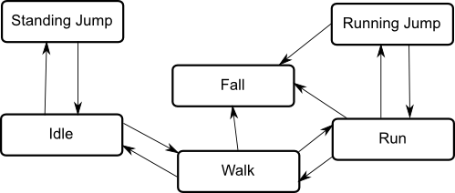

Unity’s Mecanim Animator Controller system was designed to be easily accessible to people without much programming experience. It achieves that goal quite well, but doing so creates the illusion that animations should define the way your game works, when in fact the opposite is true. Games are highly complex and dynamic so a naive brute force approach where you just throw every animation into one huge static state machine it not ideal.
- It forces you to rely on magic-strings and other bad programming practices.
- It makes you define the behaviour of your characters both in the Animator Controller and in your scripts, which wastes time and makes debugging much harder because any bug could be in your script or the Animator Controller or a combination of the two.
- It makes refactoring difficult because any changes to an Animator Controller might break a script and vice-versa.
- It greatly limits your ability to control things at runtime since everything needs to be defined beforehand in the Unity Editor.
- The states don't even align with the background grid.
These factors make it difficult to achieve an effective development workflow.

This monstrosity was taken from an official Unity Blog post ironically titled "Building for Reuse". The sheer number of states and parameters turns it from a meaningful visualisation of a complex system into a convoluted mess that would be extremely difficult to work with. Programming patterns and other techniques that could normally be used to effectively develop such a system simply cannot be used when everything is constrained by this user interface.
Duplication
This state diagram taken straight from the Unity Manual actually illustrates one of the problems with the system quite effectively. To transition from the Walk state to the Fall state, a script must detect that the character is no longer on the ground and a transition must be set up between those states. Then when the script detects that the character is back on the ground it can try to go back to Idle, except there is no transition from Fall to Idle so nothing will happen. Development time was originally spent creating the state machine and the code logic separately, and now even more time needs to be spent figuring out whether the problem is a bug in the ground detection code or in the state machine (or both) and then fixing it without breaking anything else.
That problem would never occur with Animancer. You still need to detect when the creature leaves and returns to the ground, but when you tell it to play an animation it will simply play that animation.
Dependencies
Mecanim has a detrimental effect on your dependencies, i.e. the additional things that a script needs in order to do its job. The fewer things you need to depend on, the better. Yet Mecamin forces additional dependencies on you when they aren't really needed.
Consider the following question in general terms:
What do you need in order to animate a character or other object?
The answer: you only require two things (in addition to the object itself):
- Something to determine what the animation does. This is what
AnimationClips are for. - Something to determine when the animation needs to be played. This is where Mecanim makes its mistake.
Mecanim uses an AnimatorController to determine when the animation is allowed based on its states, transitions, and parameters. But that on its own won't actually do anything useful, it still relies on scripts to determine when the animation needs to be played. This single requirement has been split into two parts which are very heavily dependant on each other, yet they are developed separately and have no way to specify or validate their dependencies upfront:
When a script sets a parameter, it becomes dependant on the AnimatorController having a parameter with that name (and type), however:
- When you look at the parameter in the
AnimatorController, it gives no indication of which scripts intend to use it, if any. It doesn't even let you enter a description of what it is used for (not that it would help much because scripts wouldn't be able to see the description anyway). - Likewise, when you look at the script, it doesn't give a clear indication of which parameters it intends to use either. You need to read the whole script to find out its requirements.
- You can't easily check if the parameter exists when you add your script to the object, or even on startup. The only indication you get that it doesn't exist is when you run the game and try to actually set the parameter. This means that instead of getting a clear indication immediately when something has an issue, you have to test everything extensively. To be clear: extensive testing is good, but it should be your last line of defence against bugs, not your only line of defence.
So you have these two separate things - scripts and AnimatorControllers - which are inter-dependant, yet you have no proper way of visualising, validating, or enforcing those dependencies.
Animancer avoids these problems by not splitting up the requirement in the first place. A script determines when the animation needs to be played and simply tells it to play by passing the AnimationClip to the AnimancerComponent without the need to depend on anything extra outside of the script. No dependency on pre-defined states, transitions, or parameters. Looking at the script - in the Inspector or in code - can clearly show you which AnimationClips it wants and you can use code comments and [Tooltip] attributes to give more information.
Responsibilities
Programmers have a concept known as the "Single Responsibility Principle" which states that every class or function should have responsibility over a single part of the functionality of the overall application. This is extremely helpful for developing complex systems in a way that is easy to maintain as the application grows, yet Animator Controllers do not support that concept. Instead, they are God Objects which are responsible for all the animations a character can perform, regardless of which systems actually use those animations.
Animancer gives you the freedom to define individual aspects of a character wherever they make the most sense, which often means creating certain logical groupings and wrappers for them so that multiple characters can share the same structure.
These groupings can be defined using a different approach depending on the circumstances:
MonoBehaviours are attached to a specificGameObjectin a scene or a prefab. This is useful if each group will generally be associated with one specific prefab or scene object so that you don't need a separate asset for each of them.ScriptableObjects are generally saved as isolated assets inside the project. This is useful for sharing animation groups among multiple prefabs and scene objects.
Some examples:
- Instead of each individual
AttackandSkillscript needing to acquire its own references to the appropriate animations for your current weapon, theWeaponitself could hold those animations. An array of attacks for a combo, alternatives for heavy attacks, a backstab, a custom idle or walk to hold the weapon correctly, and so on. Or rather than simply referencing an array ofAnimationClips for the attacks, the weapon could have an array ofAttackDatawhich contains the clip, damage value, damage type, force multiplier, etc. If you do use anAttackDataclass to wrap other statistics with the animations, aMonoBehaviourbased approach would allow each weapon to have different stats, even if they have the same set of animations as another. - Instead of scattering your animation references among each individual locomotion script (walk, climb, swim, etc.) you could group them together into a
LocomotionDataclass which allows you to define movement speeds and other parameters alongside the animations while remaining entirely separate from their attacks and other actions. If you find it likely that you will want to reuse a particular set of animations many times with different stats, aScriptableObjectbased approach could allow you to defineLocomotionAnimationsseparately fromLocomotionStats.
Using Controller States can also be an effective way of grouping certain animations together because they allow you to use multiple smaller Animator Controllers instead of a single large one.